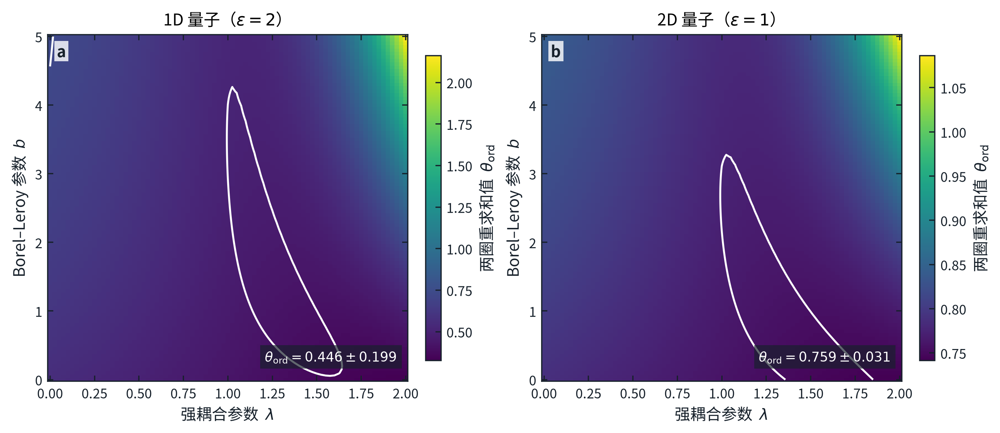
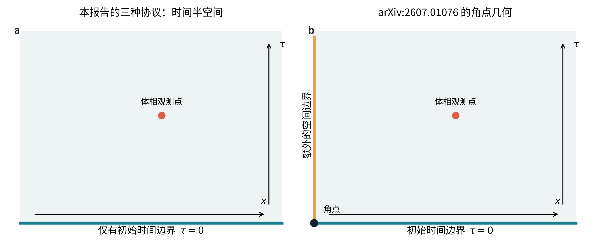

严格 \(+\) fixed
在 \(\tau=0\) 把所有微观 \(z\)-自旋固定为 \(+1\)。观测量是随后体相磁化 \(M_+(\tau)\)。这是显式破缺 \(\mathbb Z_2\) 自旋翻转对称性的有序固定边界。
FUNCTIONAL RENORMALIZATION GROUP · REPRODUCIBLE REPORT
一维与二维横场 Ising 模型；严格 \(+\) fixed、ordinary profile，以及 quenched 随机 \(+/-\) fixed 初态的小平均偏置响应。本文从问题定义、边界算符、 完整 \(O(\partial^4)\) 非微扰体相流、两圈边界重求和到误差预算逐层说明。
体相已从 DE2 升级为 Ising 标量场完整的五函数 \(O(\partial^4)\) 非微扰泛函重整化群（NPRG）固定点，并按参考文献 [4][5] 的 PMS 与交替收敛方法估计截断误差。ordinary 边界仍采用通用两圈边界算符级数， 再由本仓库完成重求和和参数稳定性扫描。下表中的误差是系统误差估计，不是统计误差。
| 量子空间维数 | 时间边界／观测量 | 本仓库 FRG 的 \(\theta\) | 外部高精度对照 |
|---|---|---|---|
| \(d=1\) | 严格 \(+\) fixed 的磁化 | \(-0.1454\pm0.0375\) | \(-0.125\)（精确） |
| ordinary profile 振幅 | \(0.4455\pm0.1986\) | \(0.375\)（精确） | |
| 随机 fixed 的平均偏置响应 | \(0.2636\pm0.2735\) | \(0.375\)，并带 \([1+\kappa g_0\ln(\tau/\tau_0)]^{-1/2}\) 对数修正 | |
| \(d=2\) | 严格 \(+\) fixed 的磁化 | \(-0.5179\pm0.0008\) | \(-0.51805\pm0.00055\) |
| ordinary profile 振幅 | \(0.7593\pm0.0309\) | \(0.75705\pm0.00081\) | |
| 随机 fixed 的平均偏置响应 | \(0.2048\pm0.0326\) | \(0.20685\pm0.00081\) |
横场量子 Ising 模型的 Hamiltonian（能量算符）写成
\[ H=-J\sum_{\langle ij\rangle}\sigma_i^z\sigma_j^z -h\sum_i\sigma_i^x . \]这里 \(J>0\) 是相邻自旋沿 \(z\) 方向的铁磁耦合，\(h\) 是沿 \(x\) 方向的横场， \(\sigma_i^x\) 与 \(\sigma_i^z\) 是格点 \(i\) 上的 Pauli 矩阵， \(\langle ij\rangle\) 表示相邻格点。调到量子临界点 \(h=h_c\) 后，长距离理论具有 动力学指数 \(z=1\)，所以 \(d\) 维量子模型等价于 \(D=d+1\) 维各向同性经典 Ising 场论。虚时间 \(\tau\) 因而是这个 \(D\) 维 Euclidean 半空间的一条坐标。虚时间短时标度的早期量子动力学背景见 [1]。
对每个协议，我们先明确定义一个观测量 \(\mathcal O(\tau)\)，再把有符号指数 \(\theta\) 定义为标度区间内的对数斜率：
\[ \mathcal O(\tau)\sim \tau^\theta,\qquad \theta=\frac{d\ln \mathcal O}{d\ln\tau}. \]因此 \(\theta>0\) 表示该观测量在短时标度区间内增长，\(\theta<0\) 表示衰减。 “initial slip” 在不同论文里可能指不同响应；只有先指定 \(\mathcal O\)，数值才可比较。
在 \(\tau=0\) 把所有微观 \(z\)-自旋固定为 \(+1\)。观测量是随后体相磁化 \(M_+(\tau)\)。这是显式破缺 \(\mathbb Z_2\) 自旋翻转对称性的有序固定边界。
时间边界保持 \(\mathbb Z_2\) 对称；连续场论的红外固定点是 ordinary Dirichlet 边界。观测量是 leading odd boundary operator（最低维奇边界算符） 的单位振幅在体相产生的 profile 系数，不是零场下恒等于零的磁化本身。
每个空间位置在 \(\tau=0\) 固定为独立的 \(+1\) 或 \(-1\)，且同一组符号在整个 虚时间演化中不重新抽样（quenched）。令 \(m_0\) 是 \(+\) 与 \(-\) 概率的微小 平均偏置，观测量是无序平均磁化对 \(m_0\) 的线性响应。

随机协议可写得更精确。令边界符号 \(s(\mathbf x)=\pm1\)，且
\[ \Pr[s=+1]=\frac{1+m_0}{2},\qquad \Pr[s=-1]=\frac{1-m_0}{2}. \]以横线表示对固定符号构型的 quenched 平均，定义
\[ \chi_{\rm rand}(\tau) =\left.\frac{\partial\,\overline{M(\tau;m_0)}}{\partial m_0}\right|_{m_0=0} \sim \tau^{\theta_{\rm rand}} . \]这一定义消除了“零偏置时平均磁化为零”的歧义。
体相序参量场记为 \(\phi\)。它的标度维数是
\[ \Delta_\phi=\frac{D-2+\eta}{2}=\frac{\beta}{\nu}. \]\(\eta\) 是体相两点关联函数的异常维数，\(\beta\) 是自发磁化临界指数， \(\nu\) 是关联长度临界指数。ordinary Dirichlet 边界上最低维的 \(\mathbb Z_2\)-odd 算符为法向导数 \(\mathcal O_1=\partial_n\phi\)；其标度维数定义为 \(x_1=\beta_1/\nu\)，其中 \(\beta_1\) 是表面磁化指数。 与均匀边界场 \(h_1\) 共轭的 RG 本征值为
\[ y_{h_1}=D-1-x_1. \]这些 ordinary 边界关系及 boundary operator expansion（边界算符展开）见 [7] 与 [14]。
有序边界已经提供有限磁化振幅，离边界距离 \(\tau\) 处只剩体相场的缩放：
\[ M_+(\tau)\sim\tau^{-\Delta_\phi}, \qquad \boxed{\theta_+=-\Delta_\phi}. \]ordinary 边界的边界算符展开给出 \(\phi(\mathbf x,\tau)\sim \tau^{x_1-\Delta_\phi}\mathcal O_1(\mathbf x)\)。 对单位 \(\mathcal O_1\) 振幅，因而
\[ \boxed{\theta_{\rm ord}=x_1-\Delta_\phi =\frac{\beta_1-\beta}{\nu}}. \]小平均偏置是均匀边界场方向，线性响应多出 \(y_{h_1}\) 的缩放：
\[ \boxed{\theta_{\rm rand}=y_{h_1}-\Delta_\phi}. \]消去 \(x_1\)、\(y_{h_1}\) 与 \(\Delta_\phi\)，得到贯穿数值检查的恒等式
\[ \boxed{\theta_{\rm rand}=1-\eta-\theta_{\rm ord}}. \]泛函重整化群使用尺度依赖的有效作用量 \(\Gamma_k\)。\(k\) 是逐步降低的动量尺度， \(R_k\) 是压制动量 \(q\lesssim k\) 模的红外调节器。精确 Wetterich 方程为 [12]
\[ \partial_t\Gamma_k[\phi] =\frac12\operatorname{Tr}\!\left[ \bigl(\Gamma_k^{(2)}[\phi]+R_k\bigr)^{-1}\partial_tR_k \right], \qquad t=\ln(k/\Lambda). \]\(\Lambda\) 是紫外起始尺度，\(\Gamma_k^{(2)}\) 是对场取两次泛函导数， \(\operatorname{Tr}\) 表示内部动量积分。方程本身精确，但它耦合无穷多个动量和场依赖 顶角，因此必须用可系统升级的导数展开截断 [16]。
对单分量 Ising 场，保留到四阶空间导数时，完整截断形式含五个独立函数：
\[ \begin{aligned} \Gamma_k[\phi]=\int d^Dx\Bigl\{& U_k(\rho)+\frac12 Z_k(\rho)(\partial_\mu\phi)^2 +\frac12 W_{a,k}(\rho)(\partial_\mu\partial_\nu\phi)^2\\ &+\frac12\phi W_{b,k}(\rho)(\partial^2\phi)(\partial_\mu\phi)^2 +\frac12W_{c,k}(\rho)\bigl[(\partial_\mu\phi)^2\bigr]^2 \Bigr\},\qquad \rho=\frac{\phi^2}{2}. \end{aligned} \]\(U_k\) 是有效势，\(Z_k\) 是二阶导数项的场依赖系数， \(W_{a,k},W_{b,k},W_{c,k}\) 是四阶导数项的三个独立系数； \(\partial^2=\partial_\mu\partial_\mu\)，重复的方向指标按惯例求和。 这正是参考文献 [5] 对 \(N=1\) 情形使用的完整 \(O(\partial^4)\) 截断，而不是只把 DE2 的误差条缩小 [5]。
代码没有抄录某一组已化简的 beta functions（耦合常数随尺度的方程）。 它对 Wetterich 方程逐次取场导数，用 ordered set partitions（有序集合划分） 生成一至四点顶角流的全部一圈拓扑；相应项数为 \(1,3,13,75\)。两点流的 \(p^2,p^4\) 系数给出 \(Z_k,W_{a,k}\)； 两种三点外动量构型同时给出 \(\partial_\phi W_{a,k}\) 与 \(\phi W_{b,k}\)；三种四点构型再分离 \(\partial_\phi^2W_{a,k}\)、\(\partial_\phi(\phi W_{b,k})\) 与 \(W_{c,k}\)。 所有场函数在 \(\rho\) 上用全局 Chebyshev 配点表示；这类直接求全局固定点函数的 数值策略可与参考文献 [6] 的独立实现对照。
为与参考文献 [4,5] 的定义一致，每个顶角乘积先按总外动量次数分级，再丢弃高于 \(p^4\) 的项；这避免把不完整的 \(O(\partial^6)\) 片段混进 \(O(\partial^4)\) 结果 [4][5]。 内部检查包括：关闭三个 \(W\) 函数后，两点流与独立 DE2 实现的差小于 \(4\times10^{-12}\)；零外动量的一至四点流与场导数恒等式分别符合到 \(10^{-14},10^{-11},10^{-8}\) 量级；树级投影能精确恢复五个输入函数。
本仓库独立扫描两个平滑调节器族
\[ r_{\rm W}(y)=\alpha\frac{y}{e^y-1}, \qquad r_{\rm E}(y)=\alpha e^{-y}, \qquad y=\frac{q^2}{k^2}, \]其中 \(r(y)=R_k/(Z_{k,0}k^2)\)，\(Z_{k,0}=Z_k(\rho=0)\)， \(\alpha\) 是形状参数。principle of minimal sensitivity（PMS）以 \(\partial\eta/\partial\alpha=0\) 的局部极值选取截断内最稳定的结果。 调节器优化的一般背景见参考文献 [13]。 参考文献 [5] 对交替收敛序列采用保守收敛半径 \(\mathcal R=4\)；本报告按同一规则写成
\[ \eta_{\rm imp}^{(4)} =\eta_{\rm ext}^{(4)} +\frac{\eta_{\rm ext}^{(2)}-\eta_{\rm ext}^{(4)}}{2\mathcal R} =\frac{7\eta_{\rm ext}^{(4)}+\eta_{\rm ext}^{(2)}}{8}, \qquad \delta_{\rm DE} =\frac{\left|\eta_{\rm ext}^{(2)}-\eta_{\rm ext}^{(4)}\right|}{8}. \]下标 “ext” 表示在各调节器 PMS 极值组成的包络上取保守端点。 场离散化、PMS 拟合和动量积分误差在 \(\delta_{\rm DE}\) 之外线性加入； 它们不是被假定为相互独立的统计噪声。

| 经典维数 | 本仓库采用的 \(\eta\) | \(\delta_{\rm DE}\) | 场离散化 | PMS | 积分／\(p\to0\) |
|---|---|---|---|---|---|
| \(D=2\) | \(0.290878\pm0.074911\) | \(0.0727\) | \(2.70\times10^{-4}\) | \(1.92\times10^{-3}\) | \(6.77\times10^{-12}\) |
| \(D=3\) | \(0.035874\pm0.001687\) | \(1.30\times10^{-3}\) | \(3.65\times10^{-4}\) | \(3.00\times10^{-6}\) | \(1.61\times10^{-5}\) |
\(D=2\) 行的 \(\delta_{\rm DE}\) 是回退 DE2 的保守截断误差，不是
\(1/8\) 的 DE4 外推误差；其状态字段为
de2_fallback_de4_not_accepted。图 2(d) 显示的部分同伦没有被当作
\(s=1\) 的物理解。矩阵无关伪弧长校正把该分支推进到
\(s=0.450100131\)，此点残差为
\(2.48\times10^{-7}\)，但距离 \(s=1\) 仍很远。
以 \(s=0.45\) 的指数型调节器检查点为例，把场区间上限
\(\rho_{\max}\) 依次改为 \(0.27,0.28,0.30,0.32\) 时，固定点残差分别为
\(4.77\)、
\(3.42\)、
\(1.67\times10^{-8}\) 和
\(16.2\)。
只有原来的 \(0.30\) 区间通过，因此不能声称场函数已经收敛。
\(D=3\) 的最终独立估计为 \(\eta=0.03587356 \pm0.00168666\)。 De Polsi 等给出完整 \(O(\partial^4)\) 改进值 \(0.03622(115)\) [5]，Balog 等进一步用 \(O(\partial^6)\) 得到 \(0.0358(6)\) [4]；二者均落在本仓库误差内。 这项一致性是事后验证，不是校准。
ordinary 固定点满足 Dirichlet 边界条件，边界上的 \(\phi\) 本身为零；需要重整化的 leading odd operator 是 \(\mathcal O_1=\partial_n\phi\)。其额外异常维数记为 \(\eta_{1,\infty}\)，下标 \(\infty\) 表示 surface enhancement（表面增强参数） \(c\to\infty\) 的 ordinary 极限。对 Ising 模型，令 \(\epsilon=4-D\)，通用两圈结果为 [14]
\[ \eta_{1,\infty} =-\frac{\epsilon}{3}-\frac{17}{81}\epsilon^2+O(\epsilon^3). \]因为 \(\eta_\parallel^{\rm ord}=2+\eta+\eta_{1,\infty}\) 且 \(\theta_{\rm ord}=(\eta_\parallel^{\rm ord}-\eta)/2\)，体相 \(\eta\) 在这个组合中 精确消去：
\[ \theta_{\rm ord}(\epsilon) =1-\frac{\epsilon}{6}-\frac{17}{162}\epsilon^2+O(\epsilon^3). \]对截断级数 \(f(\epsilon)=\sum_{n=0}^2c_n\epsilon^n\)，先定义 Borel–Leroy 变换
\[ \mathcal B_b(t)= \sum_{n=0}^2\frac{c_n t^n}{\Gamma(n+b+1)} , \]再以 \(\phi^4\) 大阶行为的首个 Borel 奇点参数 \(a=\frac13\) 作共形映射
\[ w(t)=\frac{\sqrt{1+at}-1}{\sqrt{1+at}+1}. \]\(b\) 是 Borel–Leroy 参数；\(\lambda\) 控制映射后假定的强耦合行为。 本仓库扫描 \(0\le b\le5\)、\(0\le\lambda\le2\) 的 \(101\times81\) 网格， 以参数梯度和一圈／两圈差定义稳定性分数，保留最稳定的 \(10\%\) 点。 误差取“重求和中心与未重求和两圈值之差”和“稳定集合 90% 区间半宽”中的较大者。

| \(D\) | 未重求和两圈 | 重求和中心 | 报告误差 | 稳定集合 90% 区间 |
|---|---|---|---|---|
| \(2\) | 0.246914 | 0.445529 | 0.198616 | \([0.3741,0.5037]\) |
| \(3\) | 0.728395 | 0.759314 | 0.030919 | \([0.7462,0.7728]\) |
将完整 \(O(\partial^4)\) NPRG 的 \(\eta\) 与边界重求和的 \(\theta_{\rm ord}\) 代入第 3 节恒等式， 得到图 4。误差传播中，\(\theta_+\) 使用 \(\delta\theta_+=\delta\eta/2\)； \(\theta_{\rm rand}\) 对体相和边界系统误差作线性和。这个选择比平方和更保守， 因为两项都来自截断而不是可证明相互独立的统计噪声。

精确 \(D=2\) Ising 数据是 \(\eta=\frac14\)、\(\Delta_\phi=\frac18\)、 \(x_1=y_{h_1}=\frac12\)，所以 \((\theta_+,\theta_{\rm ord},\theta_{\rm rand}) =(-\frac18,\frac38,\frac38)\)。 本仓库高阶体相／两圈边界误差覆盖这些值，但 ordinary 的误差仍很宽； 这不是高精度边界预测。
外部对照把高阶 NPRG 体相 \(\eta=0.0361(11)\) [4][5] 与 \(y_{h_1}=0.7249(6)\) [8] 组合，得到 \(\theta_+=-0.51805(55)\)、 \(\theta_{\rm ord}=0.75705(81)\) 和 \(\theta_{\rm rand}=0.20685(81)\)。 这三个对照值与本仓库误差相容，但没有参与中心值选择。

quenched 平均可用一组辅助场 \(\phi_a\) 表示；这组场在英文文献中称为 replicas。对高斯随机边界场，方差 \(g\) 产生
\[ -\frac{g}{2}\sum_{a,b} \int_{\tau=0}d^{D-1}x\, \mathcal O_{1,a}(\mathbf x)\mathcal O_{1,b}(\mathbf x). \]\(a,b\) 是 replica 标签，不是空间指标。随机场均方根振幅 \(w=\sqrt g\) 的线性 RG 本征值和方差本征值分别为
\[ y_w=y_{h_1}-\frac{D-1}{2},\qquad y_g=2y_w=2y_{h_1}-(D-1). \]\(y_g<0\) 时随机方差无关，会在长尺度流向零；\(y_g=0\) 时需要计算非线性项。 三维经典 ordinary Ising 的随机表面场无关，这一判断也由数值与场论研究支持 [10]。
精确 \(D=2\) ordinary 边界有 \(y_{h_1}=\frac12\)，所以 \(y_g=0\)。 一圈非线性流写成
\[ \frac{dg}{d\ell}=-\kappa g^2+O(g^3),\qquad \kappa>0, \]其解为 \(g(\ell)=g_0/(1+\kappa g_0\ell)\)。均匀平均偏置对应的边界场流为 [9]
\[ h_1(\ell)= \frac{h_1(0)e^{\ell/2}} {\sqrt{1+\kappa g_0\ell}}. \]取 \(\ell=\ln(\tau/\tau_0)\)，随机偏置响应因此是
\[ \boxed{ \chi_{\rm rand}(\tau)\sim \tau^{3/8} \left[1+\kappa g_0\ln(\tau/\tau_0)\right]^{-1/2} }. \]整个方括号的指数是 \(-\frac12\)，而不是 \(+\frac12\)；有效斜率从 \(\frac38\) 的下方缓慢趋近：
\[ \theta_{\rm eff}(\tau)= \frac38- \frac{\kappa g_0}{2[1+\kappa g_0\ln(\tau/\tau_0)]}. \]
Shu、Yin 与 Yao 从平移不变的 coherent product state（相干直积态）出发； 在 \(M_0=0\) 时，该态的纵向磁化和纵向关联长度都为零。他们测量小 \(M_0\) 的零动量 boundary-to-bulk response，并报告一维量子 \(\theta=0.3734(2)\)、二维量子 \(\theta=0.209(4)\) [2]。
该响应沿均匀边界共轭场方向缩放，因此指数结构是 \(y_{h_1}-\Delta_\phi\)。这与本报告随机 fixed 在无序流向 ordinary 后的 mean-bias leading power（平均偏置主幂次）相同，但两个微观协议并不相同： 2017 年工作没有逐点抽取并冻结随机 \(+/-\) 边界。更重要的是，它不是本报告定义的 ordinary profile \(x_1-\Delta_\phi\)。所以二维量子 \(0.209(4)\) 应与 本仓库 \(\theta_{\rm rand}=0.2048 \pm0.0326\) 以及外部对照 \(0.20685(81)\) 比较，而不是与 \(\theta_{\rm ord}\approx0.757\) 比较。
还要区分“主幂次相同”和“完整标度函数相同”。在一维量子模型中，随机 fixed 的方差是边缘无关变量，会额外产生 \([1+\kappa g_0\ln(\tau/\tau_0)]^{-1/2}\) [9]；2017 年的平移不变相干态没有这项 quenched-disorder 对数。因此其 \(0.3734(2)\) 可检验 \(y_{h_1}-\Delta_\phi\) 的渐近幂次，却不能检验随机协议的整个有限时间曲线。 在二维量子模型中，本仓库与 2017 年数值的中心差为 \(-0.004187\)， 明显小于目前由两圈边界截断主导的误差。
该预印本研究的不是只有 \(\tau=0\) 的时间半空间，而是在系统中再加入一个物理空间 边界；空间边界与初始时间边界相交，形成 codimension-two corner（余维数为 2 的角点） [3]。

预印本定义体相 short-time exponent 为 \(\theta\)，并给出角点处两个组合
\[ \theta_1=\theta-2\frac{\beta_1-\beta}{\nu}, \qquad \theta_1'=\theta-\frac{\beta_1-\beta}{\nu}. \]本报告的 ordinary profile 指数恰好是其中的“减数”
\[ \theta_{\rm ord}=\frac{\beta_1-\beta}{\nu}, \]但它既不是 \(\theta_1\)，也不是 \(\theta_1'\)。用 v1 印出的 \(\beta=0.32653\)、 \(\nu=0.6299709\)、 \(\beta_1=0.8003\) 与 \(\theta=0.209\) 直接计算得到
\[ \frac{\beta_1-\beta}{\nu} =0.752051, \] \[ \theta_1=-1.295101, \qquad \theta_1'=-0.543051. \]后一个数与 v1 正文写出的 \(-0.532\) 相差 \(-0.011051\)。 本报告只陈述“印刷输入不能复现印刷输出”这一算术事实，不据此修改自己的 FRG。 此外，v1 列出的 \(\beta_1/\nu=1.2704\) 与其所引 Hasenbusch 原始结果 \(y_{h_1}=0.7249(6)\) 所推出的 \(\beta_1/\nu=2-y_{h_1}=1.2751(6)\) 不完全一致 [8]；本报告的对照表使用后者。
Diehl 与 Shpot 在固定 \(D=3\) 的 massive field theory（有质量场论）中对 ordinary 边界计算到两圈，并用 Padé–Borel 重求和；其 Ising 表给出 \(\eta_\parallel^{\rm ord}=1.528\) [15]。若与高阶体相 \(\eta\approx0.036\) 组合，则 \((\eta_\parallel-\eta)/2\approx0.746\)，落在本仓库 \(0.7593\pm0.0309\) 内。两者差异主要来自重求和方案与 \(\epsilon\)-展开／固定维数展开的不同，而不是把目标值塞入流方程。
体相方面，现在可以逐级作同方法比较。本仓库在 \(D=3\) 的指数调节器上得到 \(O(\partial^2)\) PMS 值 \(0.04541491\)， 参考文献 [4] 的对应序列值为 \(0.04551\)；本仓库的 \(O(\partial^4)\) 值 \(0.03361966\) 对应文献值 \(0.03357\) [4]。两级均由本仓库流方程独立得到。
按参考文献 [5] 的 \(1/8\) 外推，本仓库给出 \(\eta=0.03587356 \pm0.00168666\)， 与其完整 \(O(\partial^4)\) 改进值 \(0.03622(115)\) 的中心差为 \(-0.00034644\) [5]；与参考文献 [4] 结合 \(O(\partial^6)\) 后的 \(0.0358(6)\) 中心差为 \(0.00007356\) [4]。剩余差异可由本仓库只到 \(O(\partial^4)\)、Wetterich 族尚未在最高场配点阶数收敛，以及动量投影和调节器 参数化差别解释；这些项都保留在误差账本中，没有通过移动中心值消除。
这项体相升级会直接缩小严格 \(+\) fixed 的误差，也会改善随机偏置指数中的 \(1-\eta\) 部分；但 \(\theta_{\rm ord}=(\eta_\parallel^{\rm ord}-\eta)/2\) 在两圈公式中恰好消去体相 \(\eta\)。所以 ordinary 和随机协议的总误差仍由 边界算符主导。声称三种 \(\theta\) 都已达到参考文献 [4,5] 的体相精度将是不诚实的。
| 误差来源 | 本仓库如何检查 | 结论 |
|---|---|---|
| 顶角生成与投影 | 有序集合划分计数；树级五函数恢复；零动量场导数恒等式；关闭 \(W\) 后与 DE2 比较 | 分别通过 \(1,3,13,75\) 项计数和 \(10^{-8}\) 或更好的数值恒等式门槛 |
| 非线性固定点残差 | 每个同伦点和 PMS 点都必须满足统一残差门槛；失败的高阶解不进入包络 | \(D=2\) 最大接受残差 2.73e-06；\(D=3\) 为 3.51e-07 |
| 场离散化与场区间 | 改变 Chebyshev 阶数和 \(\rho_{\max}\)，并重新求固定点；不把旧解上的单次投影误称为重求解 | 相应位移显式进入 \(\delta_{\rm field}\)；\(D=2\) 另保留低临界维数的非均匀收敛警告 |
| 调节器依赖 | Wetterich 型与指数型分别求固定点并作局部二次 PMS | 两个族先组成保守极值包络，再做导数展开外推，不把族间差平均掉 |
| 动量积分与 \(p\to0\) 外推 | 增加径向／角向节点，改变小外动量集合与拟合阶数，再投影或重求解 | \(D=3\) 位移约 1.61e-05；\(D=2\) 位移约 6.77e-12 |
| 体相导数展开 | 直接比较完整 \(O(\partial^2)\) 与 \(O(\partial^4)\)，按参考文献 [5] 的保守 \(1/8\) 尾项外推 | 不再用 \(|\eta|/4\) 猜测；仍未显式实现 13 函数的 \(O(\partial^6)\) |
| ordinary 边界高阶项 | 一圈／两圈差、重求和参数平台、未重求和与重求和差 | 三个初态指数中最大的未决系统误差 |
| 随机边界的非高斯累积量（高阶无序相关） | 只处理 ordinary 固定点附近的最低阶方差与平均偏置方向 | 主幂次可靠性由随机固定点是否仍流向 ordinary 决定；强无序 crossover 未直接求解 |
“尽可能精确”在这里的正确含义是：把可计算的数值误差压低，把截断选择显式扫描， 并把尚未计算的高阶算符诚实放入误差；它不等于让中心值靠近文献。若要显著缩小下一版 三种 \(\theta\) 的共同误差，优先级是构造完整的场依赖半空间边界 NPRG，或得到三圈 以上的 ordinary 边界顶角流；继续把已经很小的 D=3 体相积分误差再压低一倍，几乎不会 缩小 ordinary 和随机偏置指数的总误差。
项目使用 uv 管理 Python 环境。下列命令从已审计并纳入 Git 的
NPRG 固定点记录重建结果、图和 HTML，再运行全部测试：
uv sync
uv run python scripts/assemble_nprg_campaign.py
uv run python scripts/run_analysis.py
uv run pytest
uv run ruff check src tests scripts单个高阶固定点和同伦序列可分别用以下入口重新计算；所有调节器、配点、积分节点、 动量点、反馈强度和残差门槛都是命令行参数，不依赖隐藏的 notebook 状态：
uv run python scripts/run_de4_fixed_point.py --help
uv run python scripts/run_de4_continuation.py --help
uv run python scripts/run_de4_arclength.py --help
uv run python scripts/audit_de4_projection.py --help主要可审计产物：
图 1 的随机图案使用固定随机种子 \(20260726\)，仅用于说明边界几何，不参与任何指数
估计。所有表格和曲线由同一个 results 对象生成，避免手工复制数字。